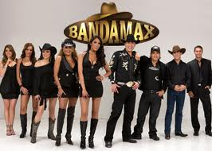
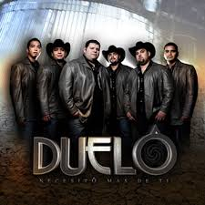
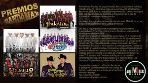

Programacion
Bandamax es un canal televisivo el cual transmite diversos programas al gusto de la musica de banda ente sus variaciones tales son:
Marilé Te las Toca
Marilé te presentará las mejores entrevistas con los personajes más destacados de la música grupera.
Pa' la Banda Night Show
En Pa' la Banda Night Show, Cynthia Urias te presentará un grupo o solista con música en vivo y una interesante entrevista.
La Cantina del Tunco Maclovich
Una vez que la visites, no querrás salir de La Cantina de El Tunco Maclovich. ¡Son pura risa en Bandamax!
Al Sazón de la Música
En Al Sazón de la Música podrás ver a tus cantantes favoritos en su faceta culinaria. ¡Lizette Briones será tu guía!
Secreto a Voces
Joselyn Juncal te guiará a través de Secreto a Voces para conocer la vida de tus cantantes favoritos
Bohemiamente Chicuela
En Bohemiamente Chicuela, Blanca Martínez platicará y cantará con los compositores; los genios musicales tras el éxito de una canción.
'Contrabandeando'
Con Melissa y Melinna te la pasarás increíble en 'Contrabandeando', donde te presentarán los mejores videos musicales.
La Reina del Norte
¿Quieres ver los mejores videos musicales de la música regional mexicana? Sintoniza 'La Reina del Norte'.
Sergio me las Pone
Pídesela a Sergio... ¡pero las canciones! Él sí que sabe consentir a sus fans y los videos que le pidas, él te los pone.
Vámonos Recio
En el programa Vámonos Recio, conducido por Belinda Urias, te enterarás de todas las noticias del mundo grupero.
Con Más Alma Grupera
Acompaña a la linda Joselyn Juncal a conocer a las nuevas voces del género grupero en Con Más Alma Grupera.
Kiubo Kien Anda Ay
Toño Aldeco atenderá tus llamadas y mensajes para que votes por tu video favorito en Kiubo Kien Anda Ay.
Los Quince que Soñé
Katia Valenzuela y Carlos Girón conducen Los Quince que Soñé, donde algunas chicas competirán por cumplir sus sueños
Sorrájale Compadre
En Sorrájale Compadre podrás opinar de todos los temas que el conductor desarrolla a lo largo de la emisión
Al Compás de tus Latidos
En Al Compás de tus Latidos podrás interactuar con tus amigos y ver los consejos de moda y amor que Joselyn Juncal te dará.
Contacto Paisano
¿Estás lejos de tu familia? Espera las cámaras de Bandamax y podrás mandarles saludos y decidarles canciones

Un ejemplo de banda norteño es "DUELO" el cual es un grupo de música mexicana (grupera) fundado en marzo de 1996. Con sus canciones, discos y un estilo sumamente original se han colocado en el gusto de los jóvenes y con esto han tenido una muy fuerte aceptación en México y Estados Unidos. Actualmente mucha gente los ha comparado con grupos importantes como Intocable, Conjunto Primavera, Pesado, etc; Debido a que su forma de cantar y tocar sus instrumentos cada uno y los acordes, los llevan a este nivel de musica.
Biografía[editar]
Exitoso grupo de música mexicana fundado por el cantante, compositor, bajista, productor y arreglista Óscar Iván Treviño y el acordeonista Dimas López. Ambos músicos comenzaron como un dueto tocando en el restaurante de los padres de López, ubicado en Roma, dentro del área de Tamaulipas y Texas, sobre la frontera de México con Estados Unidos y algunas de las más importantes regiones, la canción que saco al cantante a relucir fue "Si Acaso me Escuchas".
En el mes de marzo de 1996, con la incorporación de otros tres integrantes, Duelo, nació oficialmente. Durante los siguientes cinco años el grupo desarrolló una importante carrera que le permitió grabar su álbum debut "El Amor No Acaba", editado en 2002. Posicionados en el género regional mexicano y desarrollando un típico sonido “grupero norteño”, la banda se convirtió en un verdadero exito.
“Desde Hoy” (Mayo de 2003); “Para Sobrevivir” (Junio de 2004); “Mi Historia Musical” (Octubre de 2004); “En el Área de Sueños” (Mayo de 2005); “En Vivo Desde Monterrey” (Agosto de 2005), son los títulos de los álbumes que el grupo editó durante los siguientes tres años. “Relaciones Conflictivas”, lanzado en 2006, le permitió a la banda convertirse en el grupo juvenil norteño más exitoso del momento, al obtener el primer lugar de las listas “Spanish Regional Mexican (SPRM)”, incluyendo el chart "Latin Regional Mexican Airplay" de Billboard con más de 11 millones de puntos en audiencia por la canción “Te Compro”.
En el 2007 Duelo estreno su álbum titulado “En Las Manos de un Angel” de los cuales se han desprendendido 3 sencillos hasta la fecha, “Olvidame Tú”, "Solo Contigo” y "Verte Enamorada" respectivamente.
En 2008 la agrupación lanzo su nuevo disco de corridos titulado "Historias de Valientes", que cuenta con la participación de grandes compositores como Reynaldo Martínez "El Gallero", Teodoro Bello y Julián Garza "El Viejo Paulino". El disco salió al mercado el 25 de marzo. Además el grupo encabezo un concierto en el Reliant Stadium de la ciudad de Houston, Texas, donde lograron reunir 71 mil 165 personas, rompiendo el record de mayor asistencia en la historia de este recinto.
En noviembre de este año salió a la venta una producción de éxitos, de la cual se desprende “Pobre Loco”, una canción totalmente inédita.
El 27 de enero de 2009, Duelo estreno su nuevo disco titulado "Necesito Mas De Ti". El primer sencillo de este disco también titulado "Necesito Mas De Ti" se lanzó en diciembre. Y ahora su 2º es "sentimientos de cartón"
En Abril de 2010 lanzó su nuevo disco llamado "Solamente tú" y del cual se desprende el Primer sencillo "Soy Como No Soy".
En Julio de 2010 dio a conocer su segundo sencillo del Álbum "Solamente Tu" titulado "Te Odio y Te Amo"
A Finales del mes de Octubre de 2010 lanzo su último sencillo del Álbum "La Ley del Desprecio"
En Diciembre Dan a Conocer su Nuevo Disco llamado "Por una Mujer Bonita: Corridos y Canciones el cual seria un tributo para las canciones norteñas
El 6 de Septiembre de 2011 la agrupación lanza su nuevo material discográfico titulado "Vuela Muy Alto" del que se desprenden 13 tracks siendo "yo puedo ser " "mueres de ganas" "adicto" y "malabares" los más importantes.
El 6 de Febrero de 2013, la agrupación lanza su nuevo sencillo " El Puño de Diamante", en lo que vendrá incluido en su nuevo material discográfico que saldrá a la venta estos próximos meses. "Será Todo Un Exitoso"...
El 7 de Mayo se lanza oficialmente su nuevo disco "Libre Por Naturaleza" donde contiene 13 canciones con nuevo estilo, que se colocaron rápidamente en el gusto de la gente y que alcanzó el primer lugar de ventas en Itunes.
Integrantes actuales[editar]
Oscar Iván Treviño (Bajo sexto, Primera Voz, Compositor, Director Musical) (Fundador/Integrante Original)
Dimas López Jr. (Acordeón) (Fundador/Integrante Original)
Mauricio Cano (Percusiones)
Iván Torres (Batería)
Pedro Flores (Bajo Eléctrico y Segunda Voz)
David Badillo (Animación)

Cobertura
Bandamax tiene cobertura en México, Estados Unidos, Europa, América Latina y Centro América.
Historia
Bandamax nació el 10 de diciembre de 1996 y es líder en la transmisión de videos del género grupero y norteño del momento.
En un inicio, Bandamax solamente transmitía videos continuos, pero gracias al impacto que tuvo en el público[cita requerida], en 2005 sufrió una renovación total, que incluyó programas con conductores y los mejores contenidos del mundo grupero.
En el 2006, Bandamax inició transmisiones completamente en vivo, con la participación directa del público vía telefónica, mensajes SMS y correos electrónicos.
La música, los programas, los conductores, la información, las promociones, las presentaciones y la audiencia, provocaron que Bandamax rompiera fronteras e iniciara transmisiones en Estados Unidos en noviembre del 2003.
La popularidad del canal ha crecido tanto, que para noviembre del 2008 se lanzó a través del sistema satélite de Dish Networks, y en diciembre del mismo año, los suscriptores aumentaron a más de un millón y medio[cita requerida.Bandamax se ve a nivel nacional e internacional a través de sistemas de clabe y satelital.
Conductores
Belinda Urías
Blanca Martínez La Chicuela
Cynthia Urías
Joselyn Juncal
Lizette Briones
Marilé Andrade
Melissa y Melinna León
Vanessa Arias
Antonio Aldeco
Juan Carlos Chiñas
Polo Monarrez
Roberto Carlo
Sergio Machado
Programas transmitidos
Furia Musical
Directo al Corazón
Contacto Paisano
Kiubo Kien Anda Ay
Pa' la Banda Night Show
La Cantina del Tunco Maclovich
Las más picudas
Pídesela a Sergio
Al compás de tus latidos
Secreto a Voces
Sorrájale Compadre
Vámonos Recio
Los 15 que soñé
Pa'amanecer bailando
Viejas pero sabrosas
Ponte de buenas con
Comiendo con
A dormir con
El Naucalpan Son Machín
Las románticas de Bandamax
Contrabandeando
Marilé te las toca
La Reina del Norte
Con más alma grupera